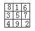

习题九
1.如果把例1中的九个数改为1、2、3、4、5、6、7、8、10（注意缺少9），得分少者为胜，甲先填，请你为甲找出一种必胜的策略。
2.甲乙两人玩轮流从右图中选数的游戏，谁选的数中有三个在同一条直线上（即和为15），谁就胜.先选的人有没有必胜的方案？

3.把例2分别改成在8×8和9×9方格纸上，甲乙两人交替将右上角石子移到左下角，其他规则不变，问谁能有必胜策略？
4.甲乙两人玩下面的游戏：有三堆玻璃球，A堆有29个，B堆有16个，C堆有16个，甲乙两人依次从中拿取，每次只许从同一堆中拿，至少拿一个，多拿不限，规定拿最后一个者为输.问如果甲先拿，他有无必胜的策略？